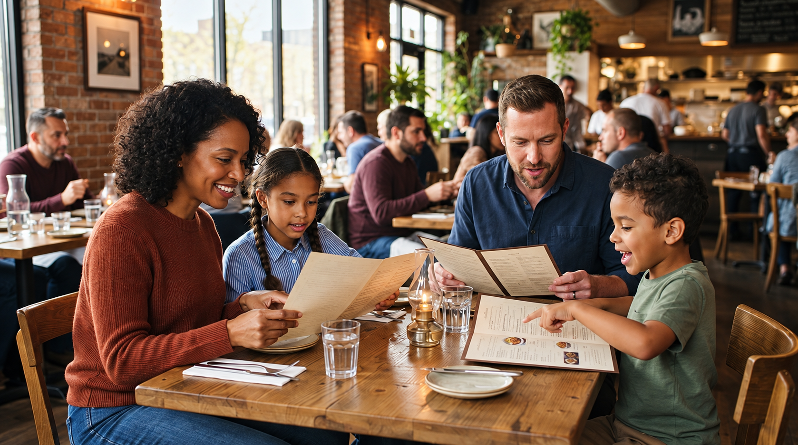
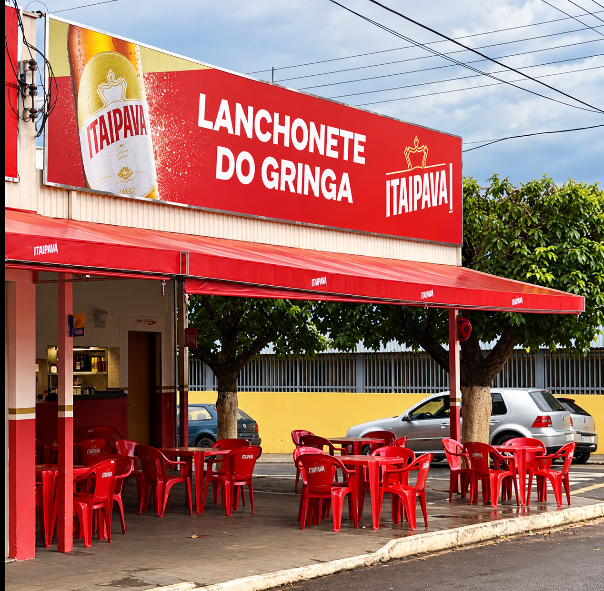

Funcionamento
De terça a domingo.
Lanchonete familiar, conversa boa e aquele encontro que dá vontade de repetir.


01 / A NOSSA CASAEm Guarani d’Oeste, nossa lanchonete tem o jeito que a gente gosta: familiar e acolhedor.
É só puxar uma cadeira, reunir quem você gosta e aproveitar o momento. Na Lanchonete do Gringa, a boa companhia faz parte da casa.
Vem conhecer a gente +Um cantinho para dividir o tempo com quem faz parte da sua vida.
Lanches preparados com cuidado e aquele toque artesanal que faz a diferença no sabor.
O acolhimento de uma lanchonete familiar no interior paulista.
Atendimento de terça a domingo.